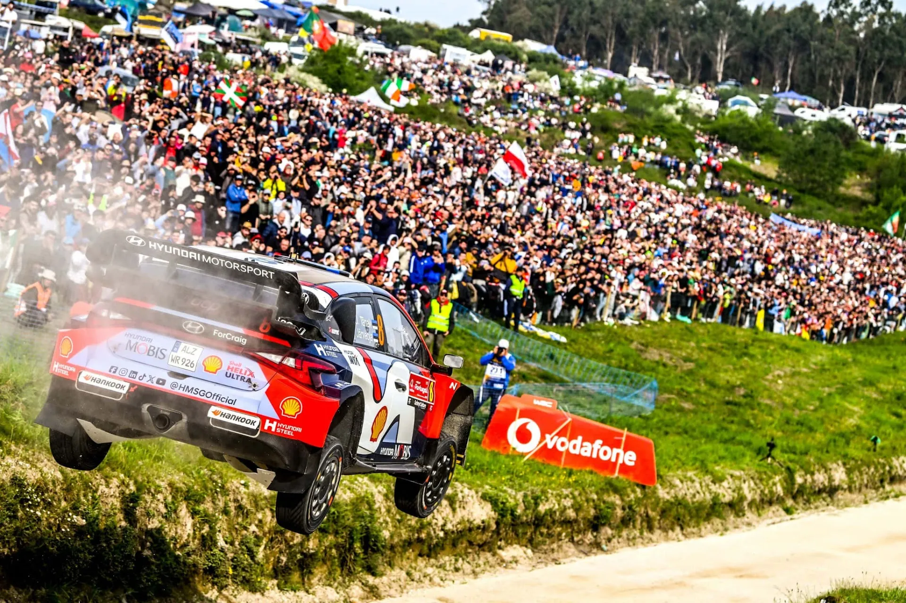
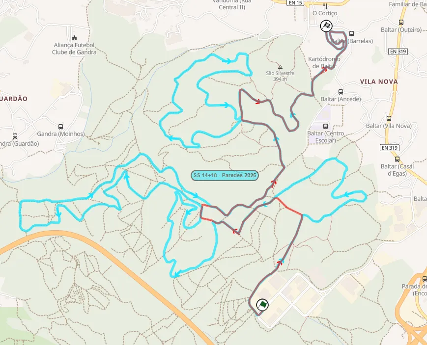
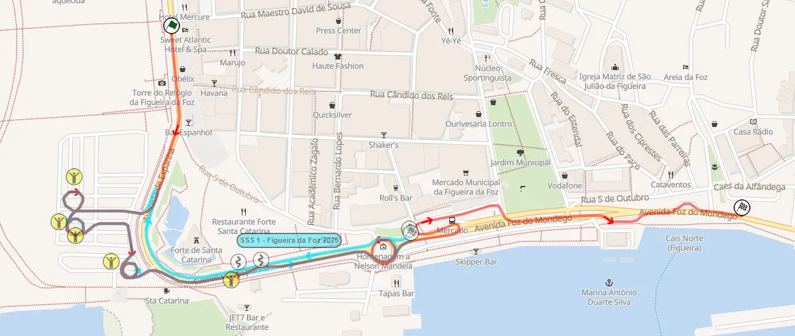
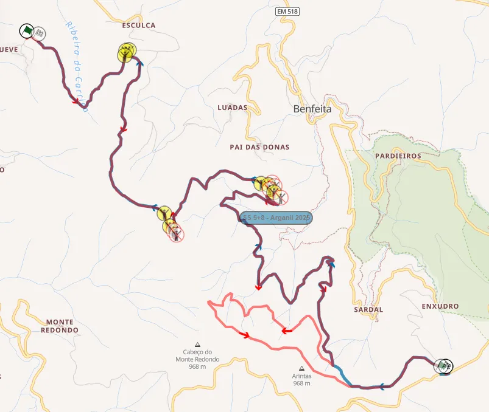
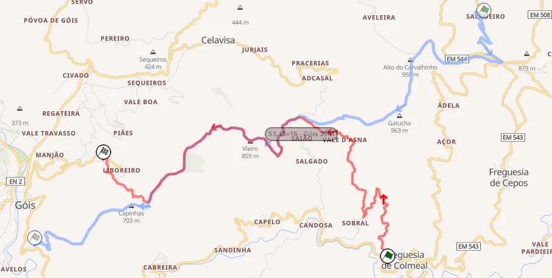
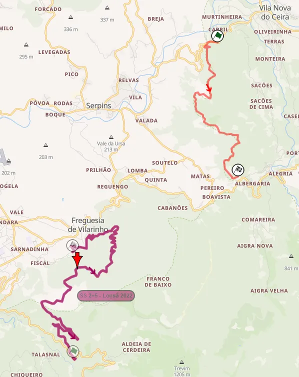
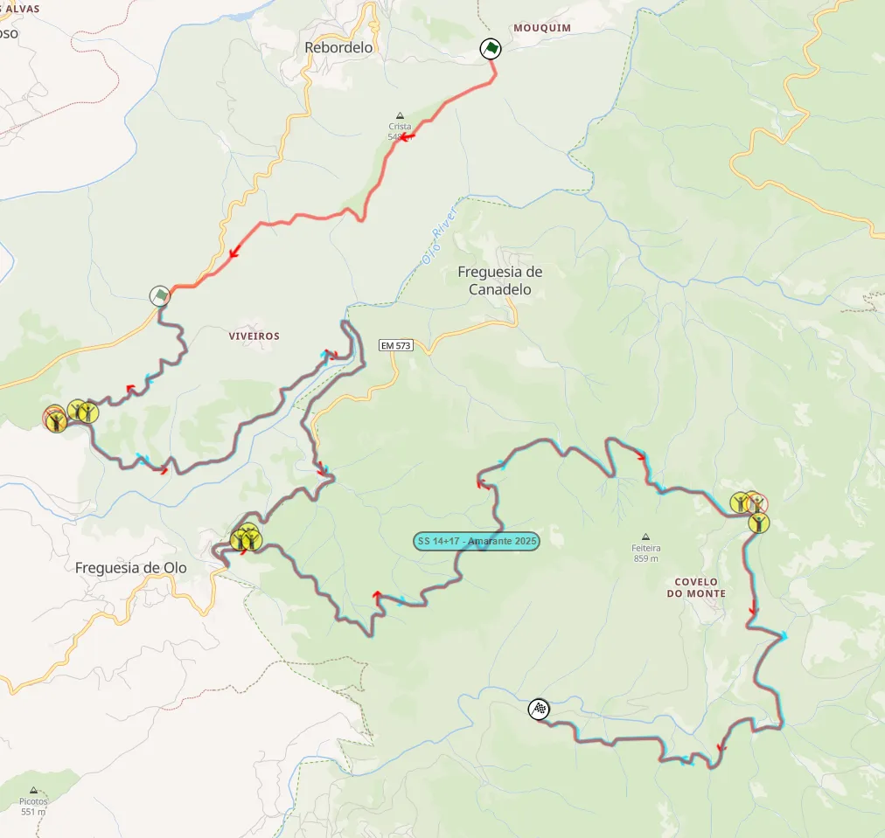
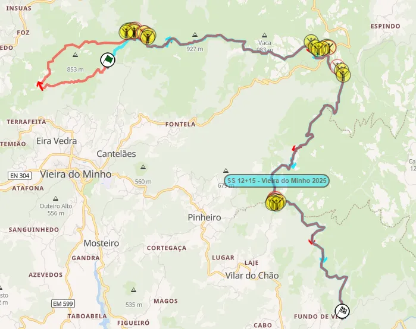

Rally Portugal 2026: Route Preview
Thumbnail: @ World
Stage Maps: Rally-Maps.com
Rally Portugal 2026 maps Rally Portugal 2026 stages Rally Portugal 2026
In what is set to be the last edition of Rally Portugal in Matosinhos for the time being, the 2026 edition of the event features an itinerary with similar locations as last year, reshuffled between different days compared to 2025. Two "proper" stages will be run on Thursday as a direct response to the drivers' comments from last year's Friday leg.
Wednesday
The event kicks off on Wednesday, with the Baltar Shakedown, which is identical to 2025.
Shakedown: Baltar - 5.72km
Changes compared to past editions: Identical to last year's Shakedown test.

Map of the Shakedown (red) compared to the Paredes stage run on Saturday (light blue)
Stage description: The Shakedown is mostly representative of the rally’s route. That's because it shares part of its route with SS Paredes which is run on Saturday.
It’s on a smooth surface, with fast sections and junctions for the first 2 kilometres, before a more technical section following. The ending is on the Baltar Rallycross track, with a man-made jump, followed by long sweeping corners on the mixed surface circuit.
Thursday
Thursday features Sever - Albergaria and Agueda - Sever, two stages used on Friday afternoon last year. They are unchanged compared to 2025, and are subsequently followed by an SSS in Figueira da Foz
SS1: Águeda - Sever - 15.08km
Changes compared to past editions: Identical to last year's stage Águeda - Sever which was used on Friday afternoon.
Stage description: The start of the stage is on a narrow gravel road, with fast sections and tight slow speed corners. It then becomes sinuous, with a section with continuous slow speed corners. This section also features steep drops on the driver's side of the road.
There's a high-speed section from 7.3 to 8.48km, after which the test again becomes twisty, also joining a more forested area at 10.5km, with trees lining both sides of the road, getting rid of the drops.
A high speed section on tarmac lasting for roughly a kilometer is followed by a very tight hairpin, which leads the route onto a steep uphill section, with the end of the stage being at the Sever do Vouga Rallycross track.
SS2: Sever - Albergaria - 20.24km
Changes compared to past editions: Identical to last year's Sever - Albergaria stage which was used on Friday afternoon.
Stage description: Sever - Albergaria was used for the first time since 1998 last year, and it was the slowest stage of the rally, if we were to discount the SSS.
The initial getaway is on tarmac, with the test then joining a sandy gravel road, which is very twisty and technical. It features many long, slow to medium speed corners and hairpins heading downhill. There's a narrow bridge pass at 3.5km.
The stage gets progressively more void of vegetation, as a result of forest fires, with big drops appearing.
At 9.34km there is a known spectating spot from the 90s, called Casa do Guarda, where the stage opens up, also becoming faster, and you can see the cars for a long time.
Following a hairpin at 9.45km, the stage again becomes twisty and technical, with more trees appearing on the side of the road.
At 15km there's a tight hairpin, with the cars joining a new road, which was used for testing for WRC2 crews in previous years. That road is initially fast, but becomes twisty and technical, and is open for the most part.
SSS3: Figueira da Foz - 1.93km
Changes compared to past editions: Held in the same area as last year's Figueira da Foz super special stage, albeit with a new layout.

Stage description: This year's version of the Figueira da Foz stage is extended from last year. It now features a high-speed section at the start, before the stage joins last year's route with a series of donuts at a parking lot. Following that, the Super Special uses both lanes of the Avenida Foz do Mondego road, with high-speed and some mickey mouse sections as well.
Friday
Day 2 features familiar stage names compared to previous editions, but they are in very different configurations. Gois and Arganil have been reversed, and Lousa is in a different road last used in 1995.
SS4/10 Mortágua - 18.15km
Changes compared to past editions: Identical to last year's stage.
Stage description: The first 3.6km are on a fast mostly smooth medium wide road. After a pass over a narrow bridge, the stage becomes technical and slower for 2 kilometers, after which it again becomes fast.
At 7.35km there’s a small tarmac section that leads onto a new road at 7.8km. The stage remains fast, again on a medium wide road. At 10.95km the stage turns to a technical "arena" section for spectators, with a big jump and a series of hairpins following. After that the stage becomes faster, using a section that was first used last year from 13.29km onwards.
SS5/7 Arganil - 19.03km
Changes compared to past editions: Reversed and extended for this year. The stage has never been run in this direction before since the rally's return to the north of Portugal!

The new version of Arganil (red) compared to last year's version (blue)
Stage description: Arganil is one of the most legendary stages of this rally, being ran as a 50+km stage in the Group B era.
More recently, we saw Sebastien Ogier running out of spare tyres and retiring in 2022, and the Hyundais of Dani Sordo and Sebastien Loeb suffering issues with their i20s fuel pressure, and dropping out of contention in 2019. Last year Adrien Fourmaux broke his suspension here.
The stage starts off with an uphill climb on a medium wide road, that is mostly smooth and flowing, with armco barriers on the side. At 1.8km, it turns onto a narrower one, which is rougher in places, remaining uphill.
Following a jump at 4.6km, the stage turns downhill, and becomes more twisty, with more hairpins and slow corners starting to appear. The road itself has more bedrock underneath the surface, which will be rough on the cars.
From 8.4km onwards, the stage climbs uphill, turning onto a very rough road at 10.9km, which is narrow and narrow and features some fast sections and hairpins.
This part of the stage was severely affected by wildfires last year and has many burnt trees. At 12.9km the stage turns onto another narrow, but more technical and flowing road via a tight hairpin. The surface is a bit more pebbly, with grass growing in the middle in sections.
A hairpin at 15km leads the crews onto the final part of the test, which is on a faster road, that features a series of crests, including the PPD house jump, just before the finish.
SS8 Góis - 15.50km
Changes compared to past editions: Run in reverse compared to previous editions, essentially a new stage, as last time parts of it were used in reverse was back in 2001!

Gois (red) compared to the 2001 edition, the last time it was used in this direction
Stage description: The start of the stage is slow and sinuous, on a narrow road. After a tight hairpin at 3.53km, it becomes faster, remaining technical. The stage then enters an open plateau, in a very nice and mostly high-speed uphill section from 7.32 to 11.61km.
The end is on a quite technical road in the forest, which is medium speed/slow, and also includes a new section, with long medium speed corners just before the finish.
SS6/9 Lousã - 7.07km
Changes compared to past editions: Has nothing in common with last year's Lousã test. It's on another road, which used to be known as the Candosa stage, and was last used in 1995.

The route of this year's Lousa (Candosa) test, compared to the stage used in the past editions (dark red)
Stage description: The start of the stage is on tarmac, joining a narrow and quite abrasive road shortly after. Following a series of hairpins, it gets faster, before again becoming technical. There is a very rough section inside the forest from 5.11km to just before the finish, with the road also becoming very narrow, with vegetation on either side.
Saturday
Saturday is the longest day of the rally at 145km. It features four stages run at each side of a 30-minute service. Paredes and Felgueiras swap places with Vieira do Minho, which will instead be used on Sunday.
SS11/15: Felgueiras - 8.81km
Changes compared to past editions: Identical to last year's version of the stage.
Stage description: A small downhill technical section at the start is followed by a fast one, after which a series of cambered turns follows. It remains fast, but also technical until 6.6km, after which it becomes twisty and slow until the finish.
Gus Greensmith crashed out of the lead in WRC2 on this stage in 2024, and Andrea Aghini crashed out from 3rd in 1993, back when the stage was called “Santa Quiteria”.
SS12/16 Cabeceiras de Basto - 19.91km
Changes compared to past editions: Identical to the stage used in 2024 and 2025.
Stage description: Cabeceiras de Basto was used on Sunday in 2024, with Gregoire Munster and Sami Pajari crashing out of the rally, and Elfyn Evans having issues on the second pass.
The first 5km are on a fast uphill road, with the stage reaching up to 1100m in altitude. There’s an open and wide section in a plateau at the highest point, after which the stage then becomes downhill, and narrow again, as it rejoins the forest. It then becomes slow and technical at 10km, a character that it retains until the finish.
From 10.89 to 11.76km there’s a very narrow tarmac section, with a return to gravel following, with a very tight hairpin. That road is narrow and technical, but also fast from 12.7km. The stage becomes bumpy and rough, with a very tight hairpin also at 14.7km. It remains technical and slow until the finish.
SS13/16 Amarante - 25.95km
Changes compared to past editions: Used in a slightly extended format compared to 2025, but still falling short of its 37km length from 2024.

This year's Amarante (red) compared to last year (light blue)
Stage description: Amarante is a classic Rally Portugal stage, and it’s one of the most well-known stages from this rally. In 2024, Takamoto Katsuta broke his suspension and retired here. Ott Tanak has lost a potential win three times on this stage, losing his power steering from the lead last year, damaging his suspension and retiring from the lead in 2021, and dropping to 5th in 2017 after damaging his suspension.
Amarante starts further back compared to last year, with a section that is high-speed and flowing at first, before a sequence of technical corners, where the stage becomes rough, with exposed rocks. After that, there's a flat-out section that follows, before the stage joins a tarmac road momentarily and continues onto the road from last year.
That road is technical and slow, but the stage shortly after becomes wider and faster, while still remaining technical. It also passes through a cobbled bridge at 9.9km. A tarmac section follows at 11.3km, with this twisty stretch lasting for about 2 kilometers.
The stage rejoins a gravel road at 13.3km via a hairpin, with said road being twisty and mostly narrow and slow. At 19.5km, there’s another tarmac section, on a narrow and bumpy surface, before again becoming gravel at 20.5km, with the stage being downhill until the finish.
The subsequent fast section amongst the trees is where Kris Meeke’s career with Citroen ended, after the Northern Irishman suffered a massive crash.
SS18/21: Paredes - 16.09km
Changes compared to past editions: Identical to last year's version of the stage.
Stage description: Paredes is a relatively new stage in the history of this rally, using newly made roads, and first appearing in 2023. It shares some of its route with the Shakedown stage.
The first part of the stage is fast on a wide to medium wide road, before becoming very technical and slow at 3.52km, with it becoming narrower at 6km. That part of the stage is in the forest and is slow, rough and sinuous, with many slow corners and hairpins, going downhill. It becomes smoother again shortly after, before it again becomes rough and narrow at 8.17km, going uphill.
The stage is technical and twisty, with some fast parts also until it joins the RX track at 15.3km, after which it follows the route of the track just like the Shakedown did.
Martins Sesks had a puncture here last year.
SSS17: Lousada - 3.52km
Changes compared to past editions: The same as last year, with the circuit having received a facelift.
Stage description: The head to head super special uses the mixed surface RX circuit, with the joker now being on tarmac instead of gravel. The circuit features mostly long medium speed corners as well as tight junctions and hairpins.
Sunday
The final day of the event features two repeated stages, one less than last year. Vieira do Minho is extended and is now used on Sunday not Saturday. As ever, Fafe remains unchanged as the Power Stage.
SS20/22 Vieira do Minho - 21.72km
Changes compared to past editions: Extended from the start compared to last year. It's the same as the 2022 version.

This year's stage (red) compared to last year (light blue)
Stage description: The stage returns to the start used in the 2022 edition, which is initially narrow and sinuous, becoming faster after a crest at 3km. It then joins the route of last year's edition at 5km, remaining narrow but fast for the next 800m, before joining the "main road". There, the test becomes more technical.
It becomes faster 10 kilometers in, with a jump also. At 11.74km the stage has a small flat-out tarmac section, after which it uses a narrow and fast road, which widens after a tricky technical section at 12.1km.
After that, the stage is mostly fast, featuring a man-made jump at 17.18km, after which it becomes more technical and also narrow in places.
SS20/23 Fafe - 11.18km
Changes compared to past editions: Identical to last year's edition.
Stage description: Fafe is what most people first think of when Rally Portugal is mentioned. The iconic Fafe jump first appeared back in 1984, and since then it's been a staple of the event, with the stage gathering huge crowds. The stage is more than just the jump though, having claimed many drivers, including Kris Meeke and Sebastien Loeb in 2019, Teemu Suninen crashing out of the lead in WRC2 in 2022 as did Andreas Mikkelsen in 2017.
Gus Greensmith and Quentin Gilbert are some of the people that have had big crashes at the stage's jump.
The initial getaway is on tarmac, with the stage turning to gravel shortly after. This part is a mix of fast and more technical parts, with long corners and a nice flow. A small tarmac section follows, after which the stage becomes fast and wide, on an open section, passing next to wind turbines.
The stage then becomes narrower, with a big jump at 8.25km. After that it becomes more twisty for a bit, before joining the tarmac momentarily, leaving it via the iconic hairpin.
A series of medium speed long corners follows, before the iconic jump and the finish of the stage.


Comments